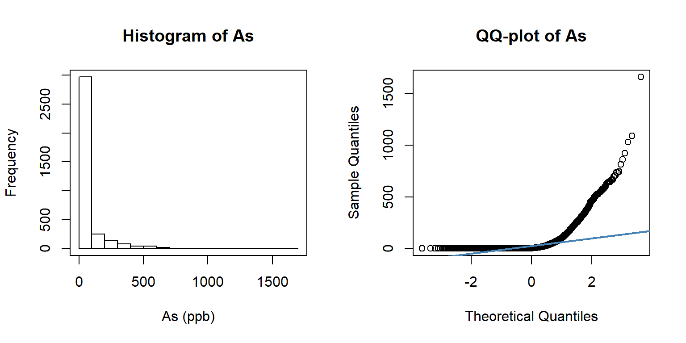
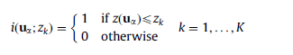
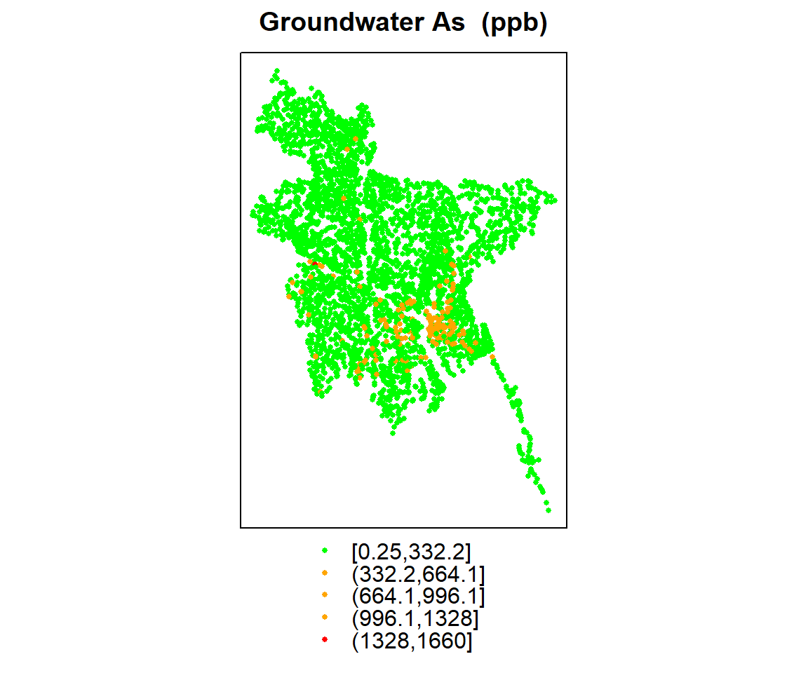
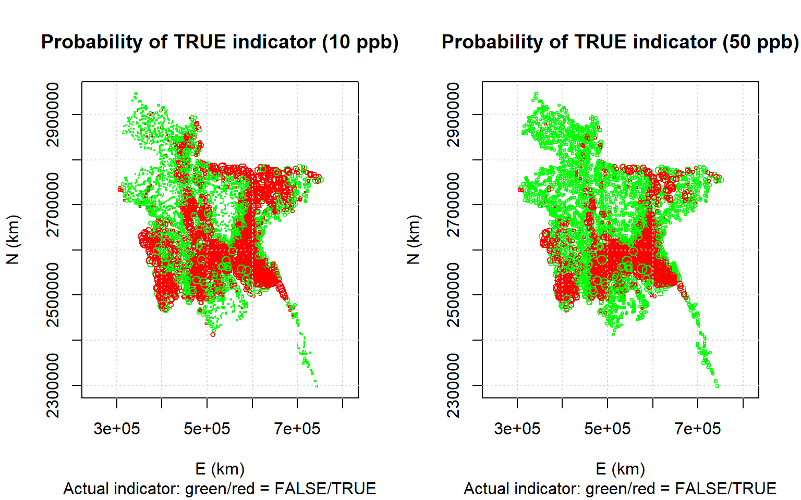

Indicator Kriging
Indicator kriging (IK) is a non-parametric geostatistical method that works with variables after indicator transformation (0, 1) of pre-defined threshold values and map the probability of exceeding pre-defined threshold values. This is directly useful for probabilistic decision-making. It can also be used to estimate an entire cumulative probability distribution (CDF) and the mean (E-type-estimate) of CDF can be used as an estimate of the pollutant concentration after modeling of the upper and lower tails of the distribution (Goovaerts, 2009). The CDF based IK is applicable when data is strongly skewed, traditional data transformation limit to get robust statistics and estimators due to extreme values.
In R using gstat package, we can implement Indicator kriging (IK) for probabilistic mapping. But there is no R package available yet to ** E-type-estimate** from CDF’s of IK. You can do it with the most popular geostatistical software Gslib and SGeMS. ** AUTO-IK**(Goovaerts, 2009), is an automated Gslib routines for selection of thresholds for binary coding of continuous data, computation and modeling of indicator semivariograms, modeling of probability distributions at unmonitored locations (regular or irregular grids), and estimation of the mean and variance of these distributions.
In this exercise will use ground water arsenic (As) concentration data for Bangladesh from British Geological Survey. The data-base contains hydro-chemical data of the survey of 3534 boreholes from 61 of the 64 districts of Bangladesh. ). About 27.7% and 2.5% of the sampled wells had As concentration less than the instrumental detection limit of 0.5 u/L for hydride generation-atomic fluorescence spectrometry and 6.0 ug/L for hydride generation- ICP- AES, respectively. Samples that have As concretion below detection limits, we assigned values of half the equipment detection limits (0.25 or 3.0 ug/l).
The soil organic carbon data (train and test data set) could be found here.
We will use two thresholds - 10 ppb (WHO standard) and 50 ppb (Bangladesh standard) to create probability maps exceeding these thresholds, We will follow steps below:
Convert numeric variables to indicator variables
Compute and model indicator variograms
Predict the probability of exceeding a threshold by indicator kriging
Load package:
library(plyr)
library(dplyr)
library(gstat)
library(raster)
library(rasterVis)
library(ggplot2)
library(car)
library(classInt)
library(RStoolbox)
library(gridExtra)Load Data
# Define data folder
dataFolder<-"F:\\Spatial_Data_Processing_and_Analysis_R\\Data\\DATA_08\\"df<-read.csv(paste0(dataFolder,"bgs_geochemical.csv"), header= TRUE)
grid<-read.csv(paste0(dataFolder,"bd_grid.csv"), header= TRUE)
bd<-shapefile(paste0(dataFolder,"BD_Banladesh_BUTM.shp")) Explotory data analysis
summary(df$As)## Min. 1st Qu. Median Mean 3rd Qu. Max.
## 0.25 0.25 3.90 55.17 49.98 1660.00par(mfrow=c(1,2))
hist(df$As, breaks=20, xlab = "As (ppb)", main="Histogram of As")
box()
qqnorm(df$As, pch = 1,main= "QQ-plot of As")
qqline(df$As, col = "steelblue", lwd = 2) 
par(mfrow=c(1,1))Create a SPDF
All sampling locations are in Geographical co-ordinates system, so we need convert the data in a projected coordinate system (Albers Equal Area Conic NAD1983)
## define coordinates
xy <- df[,c(4,5)]
# Convert to spatial point
SPDF <- SpatialPointsDataFrame(coords = xy, data=df)
# Define projection
proj4string(SPDF) = CRS("+proj=longlat +ellps=WGS84") # WGS 84
# Change projection
BUTM<-proj4string(bd) # extract projection information
SPDF.PROJ<- spTransform(SPDF, # Input SPDF
BUTM) # projection # convert to a data-frame
point.df<-as.data.frame(SPDF.PROJ)
# Rename (last two column)
colnames(point.df)[35] <- "x"
colnames(point.df)[36] <- "y"
mf<-point.df[,c(35:36,7,15,23)]
head(mf)## x y WELL_TYPE As Fe
## 1 509574.3 2474006 DTW 0.5 0.103
## 2 439962.9 2647931 STW 0.5 0.087
## 3 662328.1 2718502 STW 0.5 1.37
## 4 619708.4 2631583 STW 0.5 0.128
## 5 454332.2 2522667 DTW 0.5 0.019
## 6 438852.0 2576967 STW 0.5 0.042Indicator transformation
Now, we compute an indicator variable for threshold 400 ppm Pb using following equation. Here an indicator for a continuous variable is 1 if the value is below a defined threshold, 0 otherwise

ik.10<-mf$As > 10 # threshold 10 ppb
ik.50<-mf$As > 50 # threshold 50 ppbNow, we create a df with this indicator.
ik.df<-as.data.frame(cbind(mf,ik.10,ik.50))
head(ik.df)## x y WELL_TYPE As Fe ik.10 ik.50
## 1 509574.3 2474006 DTW 0.5 0.103 FALSE FALSE
## 2 439962.9 2647931 STW 0.5 0.087 FALSE FALSE
## 3 662328.1 2718502 STW 0.5 1.37 FALSE FALSE
## 4 619708.4 2631583 STW 0.5 0.128 FALSE FALSE
## 5 454332.2 2522667 DTW 0.5 0.019 FALSE FALSE
## 6 438852.0 2576967 STW 0.5 0.042 FALSE FALSEcoordinates(ik.df)=~x+y
coordinates(grid) = ~x+yMap data
spplot(ik.df, zcol = "As", col.regions = c("green", "orange", "red"), cex=.5,
main = "Groundwater As (ppb)")
p1<-spplot(ik.df, zcol = "ik.50", col.regions = c("green", "red"), cex=.5,
main = "As > 10 ppb")
p2<-spplot(ik.df, zcol = "ik.50", col.regions = c("green", "red"), cex=.5,
main = " As > 50 ppb")
grid.arrange(p1, p2, ncol=2)
Indicator Variograms
ik.df <- ik.df[-zerodist(ik.df)[,1],]
# Variogram
v10<-variogram(ik.10~ 1, data = ik.df)
v50<-variogram(ik.50~ 1, data = ik.df)
# Intial parameter set by eye esitmation
m10<-vgm(0.15,"Exp",40000,0.05)
m50<-vgm(0.15,"Exp",40000,0.05)
# least square fit
m.f.10<-fit.variogram(v10, m10)
m.f.50<-fit.variogram(v50, m50)
m.f.10## model psill range
## 1 Nug 0.1346799 0.00
## 2 Exp 0.1155823 46860.32m.f.50## model psill range
## 1 Nug 0.1005604 0.00
## 2 Exp 0.1030162 56236.76Plot varigram and fitted model
#### Plot varigram and fitted model:
v1<-plot(v10, pl=F,
model=m.f.10,
col="black",
cex=0.9,
lwd=0.5,
lty=1,
pch=19,
main="Indicator Variogram\n As > 10 ppb",
xlab="Distance (m)",
ylab="Semivariance")
v2<-plot(v50, pl=F,
model=m.f.50,
col="black",
cex=0.9,
lwd=0.5,
lty=1,
pch=19,
main="Indicator Variogram\n As > 50 ppb",
xlab="Distance (m)",
ylab="Semivariance")
grid.arrange(v1, v2, nrow = 1)
Cross validation
We will compute the Leave-one-out cross-validation (LOOCV) of the IK prediction of As concentration greater than 10 and 5 ppb. It works the same as for parametric kriging: hold one point out, predict its probability of a TRUE indicator from the other points, and then compare this probability with the actual value of the indicator.
cv.10 <- krige.cv(ik.10 ~ 1, loc = ik.df, model = m.f.10, nfold=5)
cv.50 <- krige.cv(ik.50 ~ 1, loc = ik.df, model = m.f.50, nfold=5)Limit the predicted probabilities to the range:
cv.10$var1.pred <- pmin(1, cv.10$var1.pred)
cv.10$var1.pred <- pmax(0, cv.10$var1.pred)
cv.50$var1.pred <- pmin(1, cv.50$var1.pred)
cv.50$var1.pred <- pmax(0, cv.50$var1.pred)
summary(cv.50)## Object of class SpatialPointsDataFrame
## Coordinates:
## min max
## x 306178.9 751030.6
## y 2298326.2 2946787.5
## Is projected: NA
## proj4string : [NA]
## Number of points: 3420
## Data attributes:
## var1.pred var1.var observed residual
## Min. :0.00000 Min. :0.1085 Mode :logical Min. :-0.975015
## 1st Qu.:0.02409 1st Qu.:0.1157 FALSE:2558 1st Qu.:-0.163434
## Median :0.14408 Median :0.1174 TRUE :862 Median :-0.025028
## Mean :0.25209 Mean :0.1178 Mean : 0.000281
## 3rd Qu.:0.39747 3rd Qu.:0.1192 3rd Qu.: 0.011829
## Max. :1.00000 Max. :0.1620 Max. : 1.007251
## zscore fold
## Min. :-2.8686009 Min. :1.000
## 1st Qu.:-0.4785196 1st Qu.:2.000
## Median :-0.0723274 Median :3.000
## Mean : 0.0008065 Mean :2.994
## 3rd Qu.: 0.0345433 3rd Qu.:4.000
## Max. : 2.9707475 Max. :5.000summary(cv.10)## Object of class SpatialPointsDataFrame
## Coordinates:
## min max
## x 306178.9 751030.6
## y 2298326.2 2946787.5
## Is projected: NA
## proj4string : [NA]
## Number of points: 3420
## Data attributes:
## var1.pred var1.var observed residual
## Min. :0.0000 Min. :0.1449 Mode :logical Min. :-0.994055
## 1st Qu.:0.1235 1st Qu.:0.1550 FALSE:1978 1st Qu.:-0.240866
## Median :0.3919 Median :0.1571 TRUE :1442 Median :-0.020066
## Mean :0.4207 Mean :0.1577 Mean : 0.001075
## 3rd Qu.:0.6877 3rd Qu.:0.1595 3rd Qu.: 0.241823
## Max. :1.0000 Max. :0.2123 Max. : 1.003021
## zscore fold
## Min. :-2.507825 Min. :1.000
## 1st Qu.:-0.606311 1st Qu.:2.000
## Median :-0.050460 Median :3.000
## Mean : 0.002609 Mean :3.023
## 3rd Qu.: 0.613741 3rd Qu.:4.000
## Max. : 2.558276 Max. :5.000Now we will make post-plots of the predicted probabilities, with the symbol size proportional to the probability, with the points colored red for a FALSE indicator and green for a TRUE indicator
par(mfrow=c(1,2))
plot(coordinates(cv.10), asp = 1, pch=21, col = ifelse(cv.10$observed,
"red", "green"), cex = 0.2 + 1 * cv.10$var1.pred,
xlab = "E (km)", ylab = "N (km)", main = "Probability of TRUE indicator (10 ppb)",
sub = "Actual indicator: green/red = FALSE/TRUE")
grid()
plot(coordinates(cv.50), asp = 1, pch=21, col = ifelse(cv.50$observed,
"red", "green"), cex = 0.4 + 1 * cv.50$var1.pred,
xlab = "E (km)", ylab = "N (km)", main = "Probability of TRUE indicator (50 ppb)",
sub = "Actual indicator: green/red = FALSE/TRUE")
grid()
par(mfrow=c(1,1))IK Prediction at grid location
ik.grid.10<-krige(ik.10~ 1, nmax=50,
loc=ik.df, # Data frame
newdata=grid, # Prediction location
model = m.f.10) # fitted varigram model ## [using ordinary kriging]ik.grid.50<-krige(ik.50~ 1, nmax=50,
loc=ik.df, # Data frame
newdata=grid, # Prediction location
model = m.f.50) # fitted varigram model ## [using ordinary kriging]summary(ik.grid.50)## Object of class SpatialPointsDataFrame
## Coordinates:
## min max
## x 301021.7 751021.7
## y 2279492.7 2944492.7
## Is projected: NA
## proj4string : [NA]
## Number of points: 5339
## Data attributes:
## var1.pred var1.var
## Min. :-0.005204 Min. :0.1084
## 1st Qu.: 0.014550 1st Qu.:0.1150
## Median : 0.129556 Median :0.1167
## Mean : 0.237453 Mean :0.1197
## 3rd Qu.: 0.378431 3rd Qu.:0.1198
## Max. : 1.000370 Max. :0.1883summary(ik.grid.10)## Object of class SpatialPointsDataFrame
## Coordinates:
## min max
## x 301021.7 751021.7
## y 2279492.7 2944492.7
## Is projected: NA
## proj4string : [NA]
## Number of points: 5339
## Data attributes:
## var1.pred var1.var
## Min. :-0.006402 Min. :0.1451
## 1st Qu.: 0.097765 1st Qu.:0.1541
## Median : 0.368668 Median :0.1564
## Mean : 0.407622 Mean :0.1601
## 3rd Qu.: 0.684044 3rd Qu.:0.1604
## Max. : 1.000148 Max. :0.2436Limit the predicted probabilities to the range:
ik.grid.10$var1.pred <- pmin(1, ik.grid.10$var1.pred)
ik.grid.10$var1.pred <- pmax(0, ik.grid.10$var1.pred)
ik.grid.50$var1.pred <- pmin(1, ik.grid.50$var1.pred)
ik.grid.50$var1.pred <- pmax(0, ik.grid.50$var1.pred)
summary(ik.grid.50)## Object of class SpatialPointsDataFrame
## Coordinates:
## min max
## x 301021.7 751021.7
## y 2279492.7 2944492.7
## Is projected: NA
## proj4string : [NA]
## Number of points: 5339
## Data attributes:
## var1.pred var1.var
## Min. :0.00000 Min. :0.1084
## 1st Qu.:0.01455 1st Qu.:0.1150
## Median :0.12956 Median :0.1167
## Mean :0.23748 Mean :0.1197
## 3rd Qu.:0.37843 3rd Qu.:0.1198
## Max. :1.00000 Max. :0.1883summary(ik.grid.10)## Object of class SpatialPointsDataFrame
## Coordinates:
## min max
## x 301021.7 751021.7
## y 2279492.7 2944492.7
## Is projected: NA
## proj4string : [NA]
## Number of points: 5339
## Data attributes:
## var1.pred var1.var
## Min. :0.00000 Min. :0.1451
## 1st Qu.:0.09777 1st Qu.:0.1541
## Median :0.36867 Median :0.1564
## Mean :0.40764 Mean :0.1601
## 3rd Qu.:0.68404 3rd Qu.:0.1604
## Max. :1.00000 Max. :0.2436Convert to raster
p10<-rasterFromXYZ(as.data.frame(ik.grid.10)[, c("x", "y", "var1.pred")])
p50<-rasterFromXYZ(as.data.frame(ik.grid.50)[, c("x", "y", "var1.pred")])Plot Probability Maps
For plotting the maps, we will use levelplot() function of rasterVis package.
colr <- colorRampPalette(c("blue","green",'yellow',"red"), space = "rgb")
p.strip <- list(cex=1.25)
ckey <- list(labels=list(cex=1, rot=0), height=1)
ik.plot.10<-levelplot(p10,
margin=FALSE,
auto.key=FALSE,
scales=list(y=list(draw=F,cex=.3,rot=90, tck= 0.35,alternating=1,col="grey"),
x=list(draw=F, cex=.3,tck= .35)),
par.settings=list(axis.line=list(col='grey')),
col.regions=colr,
colorkey=ckey,
par.strip.text=p.strip,
main="Probability As > 10 ppb")
ik.plot.50<-levelplot(p50,
margin=FALSE,
auto.key=FALSE,
scales=list(y=list(draw=F,cex=.3,rot=90, tck= 0.35,alternating=1,col="grey"),
x=list(draw=F, cex=.3,tck= .35)),
par.settings=list(axis.line=list(col='grey')),
col.regions=colr,
colorkey=ckey,
par.strip.text=p.strip,
main="Probability As > 50 ppb")
grid.arrange(ik.plot.10, ik.plot.50, nrow = 1)